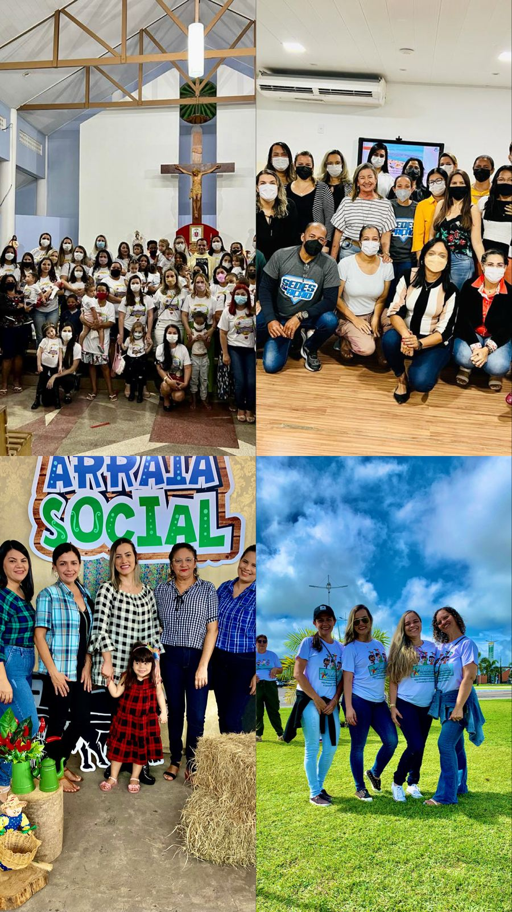
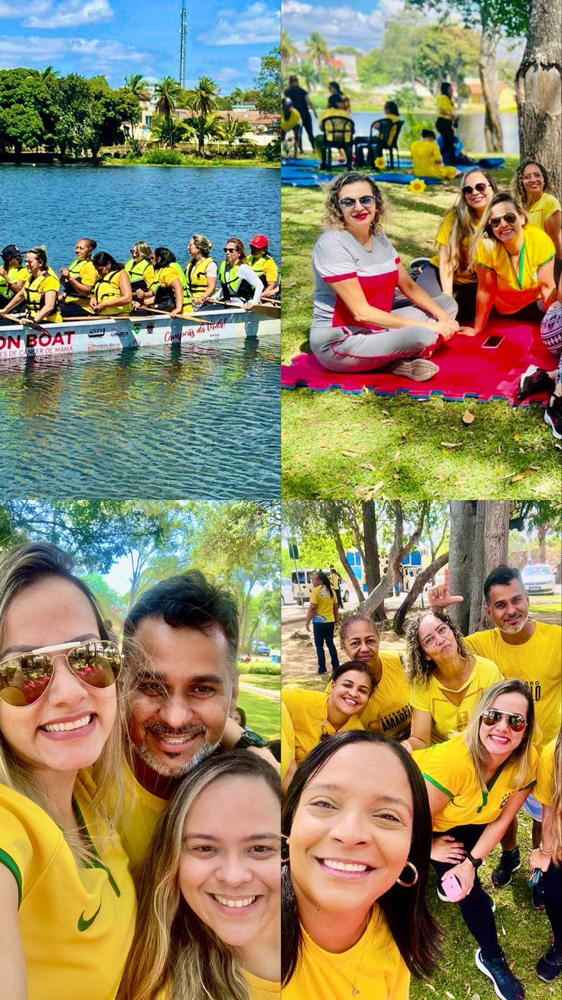
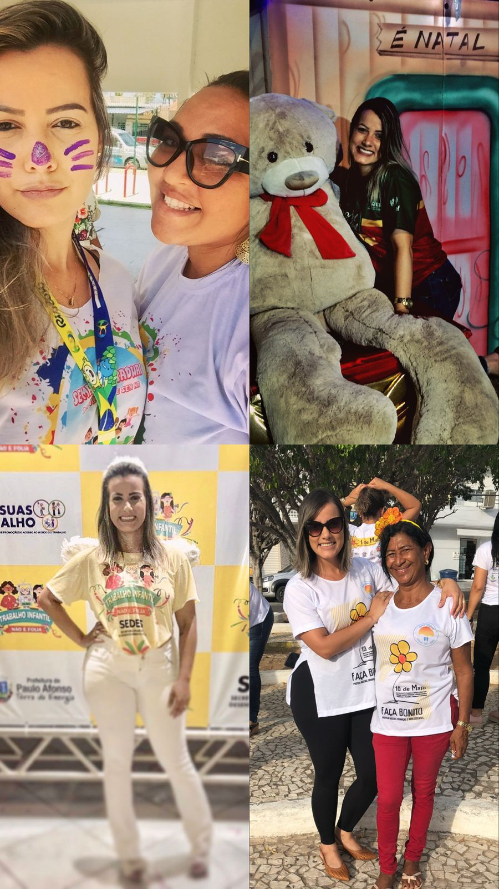
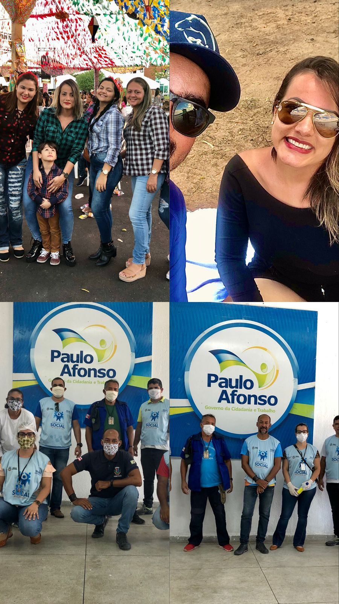
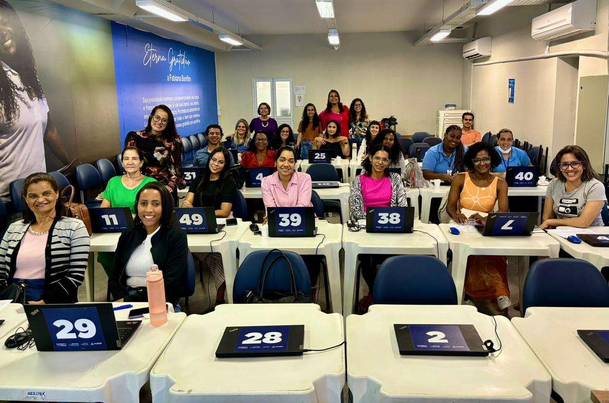
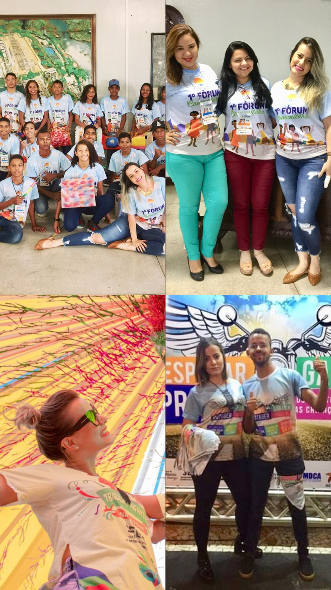
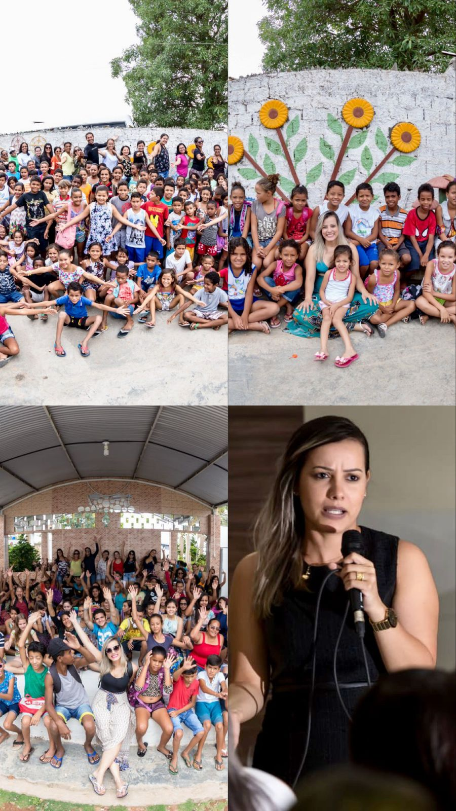
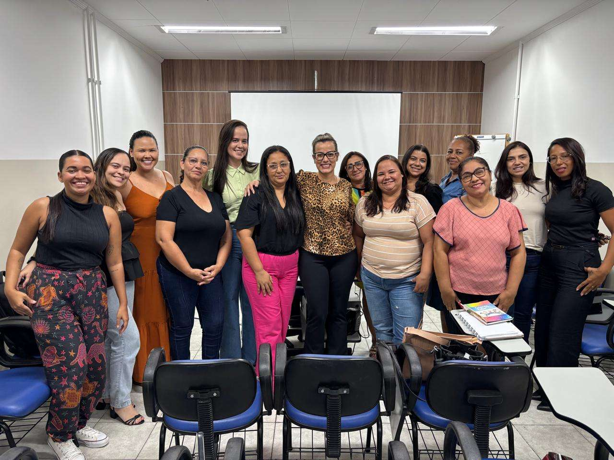
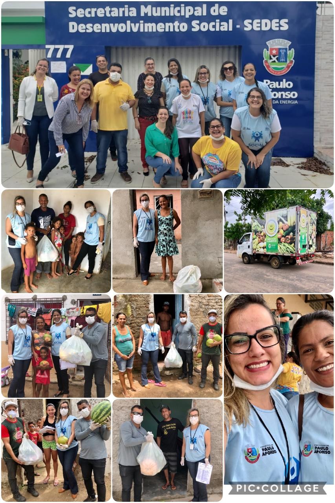

Sou Talita Oliveira Gomes, Assistente Social de formação pela Universidade Tiradentes - UNIT com especialização em Gestão de Saúde Pública pela Universidade Tiradentes - UNIT. Possuo certificações em diversas áreas da Política de Assistência Social com uma trajetória consolidada de 15 anos no SUAS. Minha atuação se destaca pela interseção entre Tecnologia e Serviço Social, impulsionando a transformação digital do Sistema Único de Assistência Social (SUAS) para otimizar programas e processos, aprimorando a gestão pública e fortalecendo a qualidade do atendimento informatizado aos usuários da política.
Ao longo da minha carreira, liderei e implementei projetos inovadores em diversos municípios como: Feira de Santana, Salvador e Paulo Afonso, modernizando fluxos de trabalho, automatizando serviços de atendimento e garantindo que políticas públicas chegassem com mais eficiência e impacto à toda população. Minha experiência no serviço público, aliada à expertise em desenvolvimento de sistemas sociais, me permitiu atuar como Product Owner - PO, coordenando soluções tecnológicas inovadoras na ferramenta MAKER que qualificam a gestão de dados e ampliam o acesso aos direitos socioassistenciais.
Meu compromisso profissional é transformar a Assistência Social em um ambiente mais inteligente, automatizado, acessível e humanizado, garantindo que a tecnologia seja um aliado estratégico na promoção da equidade social. Com um olhar inovador, sigo desenvolvendo, treinando e implementando sistemas que otimizam a atuação dos trabalhadores do SUAS, promovendo eficiência, transparência e dignidade para os cidadãos que mais precisam.
Com vasta experiência na assistência social e no desenvolvimento de projetos, atuo na criação, implementação e acompanhamento de iniciativas que promovem impacto social positivo.
O que eu forneço
Planejamento e execução de projetos sociais: Desenvolvimento de iniciativas alinhadas às demandas sociais, com metodologias inovadoras, estruturação eficiente e aplicação de boas práticas para maximizar impacto e sustentabilidade.
Monitoramento e avaliação de impacto social: Implementação de indicadores, métricas e ferramentas de análise para mensurar resultados, garantir a efetividade das ações e promover melhorias contínuas nos projetos.
Captação de recursos e parcerias estratégicas: Estruturação de propostas, elaboração de estratégias de financiamento e articulação com instituições públicas, privadas e do terceiro setor para potencializar investimentos e ampliar a abrangência dos projetos.
Com formação em Assistência Social, ofereço apoio psicossocial a indivíduos e famílias em situações de vulnerabilidade, promovendo o bem-estar, a superação de dificuldades e o fortalecimento de vínculos sociais.
O que eu ofereço
Acompanhamento e orientação psicossocial individual e familiar: Atendimento personalizado voltado para o fortalecimento de vínculos, resolução de conflitos e promoção do bem-estar social.
Promoção da saúde mental e emocional: Intervenções estratégicas para o desenvolvimento de equilíbrio emocional, redução de estresse e enfrentamento de desafios pessoais e familiares.
Atendimento especializado a grupos em situação de vulnerabilidade: Estratégias de acolhimento e suporte para públicos específicos, promovendo autonomia e inclusão social.
Encaminhamento e articulação com redes de apoio e serviços especializados: Direcionamento qualificado para serviços de saúde, assistência jurídica e outros recursos essenciais ao bem-estar dos atendidos.
Desenvolvimento de estratégias de enfrentamento e resiliência: Capacitação e orientação para a superação de desafios, empoderamento social e melhoria da qualidade de vida.
Com experiência acadêmica e na área de assistência social, ajudo estudantes na correção e aprimoramento de seus Trabalhos de Conclusão de Curso (TCC), garantindo que atendam aos critérios acadêmicos e que o conteúdo seja relevante e bem estruturado.
O que eu ofereço
Revisão e correção gramatical, ortográfica e estrutural: Garantia de um texto coeso, fluido e em conformidade com as normas da Língua Portuguesa, aprimorando a clareza e a qualidade do trabalho.
Apoio na construção de introduções e conclusões impactantes: Desenvolvimento de seções estratégicas que contextualizam o tema, apresentam objetivos e sintetizam resultados de forma clara e convincente.
Formatação conforme normas acadêmicas (ABNT, APA, Vancouver e outras): Ajuste de referências, citações, margens, espaçamentos e estrutura do documento para garantir conformidade com padrões exigidos pelas instituições.
Orientação sobre metodologias e fundamentação teórica: Auxílio na escolha de abordagens metodológicas adequadas, estruturação de capítulos e embasamento teórico para fortalecer a argumentação acadêmica.
Análise crítica do conteúdo para garantir relevância e coerência: Avaliação da consistência dos argumentos, identificação de lacunas e sugestões de aprimoramento para que o trabalho tenha maior impacto e credibilidade.
Atuo com trabalhos de conclusão de curso (TCCs), monografias, artigos científicos e dissertações nas áreas de humanas, saúde e tecnologia, garantindo rigor acadêmico e excelência na apresentação do conhecimento.
Consultoria Especializada em Serviço Social para Municípios
Consultoria Especializada em Serviço Social para Municípios
Ofereço consultoria especializada para municípios com foco na Proteção Social Básica e Proteção Social Especial de Média e Alta Complexidade, garantindo a implementação de diretrizes alinhadas à Política Nacional de Assistência Social (PNAS) e ao Sistema Único de Assistência Social (SUAS).
Minha atuação visa fortalecer a gestão e execução das políticas públicas, assegurando a qualificação dos serviços socioassistenciais, a efetividade das ações e o cumprimento das normativas vigentes.
Principais eixos da consultoria:
Apoio técnico na organização e qualificação da Proteção Social Básica: Fortalecimento do PAIF, aprimoramento dos CRAS e articulação intersetorial para ampliação do alcance das ações preventivas e protetivas.
Assessoria na estruturação e aprimoramento da Proteção Social Especial: Desenvolvimento e qualificação dos serviços de Média e Alta Complexidade, incluindo CREAS, acolhimento institucional, medidas socioeducativas e atendimento a pessoas em situação de risco e violação de direitos.
Elaboração e revisão de Planos Municipais de Assistência Social: Planejamento estratégico, monitoramento e avaliação das políticas municipais para garantir conformidade com as normativas federais.
Capacitação de equipes técnicas e gestores: Formação continuada para profissionais da assistência social, promovendo aprimoramento técnico e metodológico para a execução dos serviços.
Apoio na captação de recursos e na articulação com órgãos governamentais: Identificação de oportunidades de financiamento e otimização da aplicação de recursos nos serviços socioassistenciais.
Com experiência consolidada na gestão e execução de políticas públicas da assistência social, meu compromisso é garantir que os municípios tenham serviços mais estruturados, eficazes e humanizados, assegurando os direitos da população em situação de vulnerabilidade.
Sistema Único de Assistência Social (SUAS) e a Transformação Digital na Gestão Social
O Sistema Único de Assistência Social (SUAS) é a estrutura responsável pela organização e execução da política pública de assistência social no Brasil. Criado para garantir proteção social a indivíduos e famílias em situação de vulnerabilidade, o SUAS promove a inclusão, equidade e acesso a direitos, assegurando atendimento qualificado e humanizado em todo o território nacional.
A integração de tecnologias na gestão socioassistencial tem sido um fator determinante para a modernização e eficiência do SUAS. O uso de plataformas digitais e sistemas automatizados possibilita o monitoramento em tempo real das demandas sociais, a otimização da alocação de recursos e a transparência na execução dos serviços. Além disso, soluções tecnológicas permitem um atendimento mais ágil e personalizado, garantindo que as políticas públicas alcancem, de forma assertiva, aqueles que mais precisam.
Por meio de um processo contínuo de inovação, o SUAS se fortalece como um instrumento essencial para a promoção da cidadania e a garantia de direitos. A digitalização dos serviços sociais não apenas amplia a capacidade de resposta do sistema, mas também potencializa o impacto das ações, reduzindo desigualdades e promovendo inclusão social de forma eficiente e sustentável.

ASSISTÊNCIA SOCIAL
Transformando Vidas
Assistência Social: Um Ato de Amor e Compromisso
A verdadeira mudança começa quando estendemos a mão para quem mais precisa. Cada ação solidária é um passo rumo a um futuro mais justo.
Ser assistente social é ser ponte entre a necessidade e a dignidade, garantindo direitos e promovendo inclusão.

ASSISTÊNCIA SOCIAL
Fortalecendo Comunidades
O Impacto da Assistência Social na Sociedade
A assistência social é mais do que um serviço, é um compromisso com o bem-estar e a dignidade de cada indivíduo.
Cuidar do outro é um ato de empatia e justiça. Acreditamos em uma sociedade onde ninguém é deixado para trás.

ASSISTÊNCIA SOCIAL
Construindo Esperança

Ser Assistente Social é Fazer a Diferença
Cada sorriso resgatado, cada família acolhida, cada vida transformada é um motivo para seguir em frente.
A assistência social é um pilar essencial para a construção de uma sociedade mais humana, solidária e inclusiva.

Product Owner
Treinamento
Treinamento de Assistentes Sociais para o SUAS
O treinamento de assistentes sociais para o Sistema Único de Assistência Social (SUAS) é uma etapa fundamental para garantir que os profissionais estejam preparados para oferecer atendimento de qualidade à população em situação de vulnerabilidade. Esse processo envolve a capacitação sobre os princípios e diretrizes do SUAS, com foco em práticas éticas e eficazes para promover a inclusão, a cidadania e o acesso aos direitos sociais.
Além disso, o treinamento abrange temas como o acompanhamento e monitoramento de famílias, gestão de recursos e serviços, técnicas de intervenção social e a aplicação das políticas públicas voltadas para a assistência social. Ao capacitar os profissionais de forma contínua, garantimos que as ações de assistência social sejam realizadas com qualidade, respeito e compromisso, contribuindo para a construção de uma sociedade mais justa e igualitária.

ASSISTÊNCIA SOCIAL
Solidariedade
Solidariedade: A Chave para um Mundo Melhor
A assistência social é um elo fundamental para garantir dignidade e inclusão. Quando estendemos a mão ao próximo, fortalecemos não apenas aqueles que recebem ajuda, mas também toda a comunidade. Pequenos gestos podem transformar realidades.

ASSISTÊNCIA SOCIAL
Esperança e Ação
A Esperança se Constrói com Ações
Mais do que palavras, a assistência social exige compromisso e ação. Cada iniciativa, por menor que pareça, pode ser um passo para um futuro mais justo e igualitário. Seja a mudança que o mundo precisa.

Product Owner
Capacitação
Capacitação para o Sistema Único de Atendimento Social (SUAS)
A capacitação para o Sistema Único de Atendimento Social (SUAS) é essencial para garantir que os profissionais envolvidos no atendimento à população vulnerável tenham o conhecimento adequado sobre as políticas públicas, os procedimentos e as ferramentas do sistema. O treinamento contínuo proporciona uma melhor compreensão das diretrizes do SUAS, assegurando que cada ação seja realizada de acordo com as necessidades reais dos indivíduos e famílias atendidas.
A capacitação aborda a operação do sistema, o manuseio de dados e informações, as responsabilidades dos profissionais e como integrar as diversas ações e serviços de assistência social. Além disso, busca aprimorar as habilidades dos usuários do sistema para que possam utilizar suas funcionalidades de maneira eficaz, promovendo um atendimento ágil, eficiente e humanizado. Dessa forma, a capacitação do SUAS fortalece a gestão de recursos e a efetividade das políticas de assistência social no Brasil.

ASSISTÊNCIA SOCIAL
Impacto Positivo
Pequenas Ações, Grandes Mudanças
A verdadeira transformação começa no cotidiano, com atitudes simples que fazem toda a diferença. O impacto positivo da assistência social vai além do imediato: ele cria oportunidades, fortalece famílias e constrói um futuro mais humano.